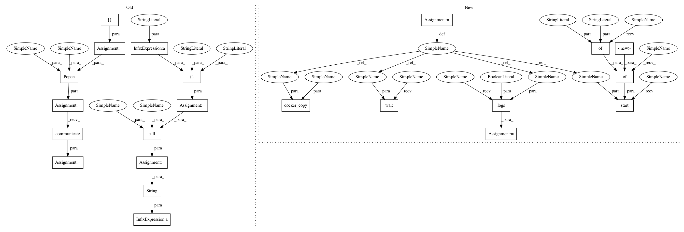

5d6747f7a58c6cd088b70adbecfce05e9b8ca4f3,mltsp/run_in_docker_container.py,,featurize_in_docker_container,#Any#Any#Any#Any#Any#Any#Any#,16
Before Change
pickle.dump(arguments, f, protocol=2)
try:
// run the docker container
cmd = ["docker", "run",
"-v", "%s:/home/mltsp" % cfg.PROJECT_PATH,
"-v", "%s:%s" % (cfg.FEATURES_FOLDER, "/Data/features"),
"-v", "%s:%s" % (cfg.UPLOAD_FOLDER, "/Data/flask_uploads"),
"-v", "%s:%s" % (cfg.MODELS_FOLDER, "/Data/models"),
"--name=%s" % container_name,
"mltsp/featurize"]
process = Popen(cmd, stdout=PIPE, stderr=PIPE)
stdout, stderr = process.communicate()
print("\n\ndocker container stdout:\n\n", str(stdout),
"\n\ndocker container stderr:\n\n", str(stderr), "\n\n")
// copy all necessary files produced in docker container to host
for file_suffix in [
"features.csv", "features_with_classes.csv", "classes.pkl"]:
cmd = [
"docker", "cp", "%s:/tmp/%s_%s" %
(container_name, featureset_key, file_suffix),
cfg.FEATURES_FOLDER]
status_code = call(cmd, stdout=PIPE, stderr=PIPE)
print(
os.path.join(
cfg.FEATURES_FOLDER,"%s_%s" % (featureset_key,
file_suffix)),
"copied to host machine - status code %s" % str(status_code))
shutil.copy2(
os.path.join(
After Change
"mltsp/featurize",
volumes={"/home/mltsp": "", "/Data": ""})["Id"]
// Start container
client.start(cont_id,
binds={cfg.PROJECT_PATH: {"bind": "/home/mltsp"},
cfg.DATA_PATH: {"bind": "/Data"}})
// Wait for process to complete
client.wait(cont_id)
stdout = client.logs(container=cont_id, stdout=True)
stderr = client.logs(container=cont_id, stderr=True)
// Copy resulting data files from container to host machine
for file_suffix in [
"features.csv", "features_with_classes.csv", "classes.pkl"]:
path = "/tmp/%s_%s" % (featureset_key, file_suffix)
target = cfg.FEATURES_FOLDER
docker_copy(client, cont_id, path, target=target)
print(
os.path.join(
cfg.FEATURES_FOLDER,"%s_%s" % (featureset_key,
file_suffix)),
In pattern: SUPERPATTERN
Frequency: 3
Non-data size: 22
Instances
Project Name: cesium-ml/cesium
Commit Name: 5d6747f7a58c6cd088b70adbecfce05e9b8ca4f3
Time: 2015-02-24
Author: a.crellinquick@gmail.com
File Name: mltsp/run_in_docker_container.py
Class Name:
Method Name: featurize_in_docker_container
Project Name: cesium-ml/cesium
Commit Name: dd4ebd98a0026f626242f30cf9688d61b4798af1
Time: 2015-02-27
Author: a.crellinquick@gmail.com
File Name: mltsp/run_in_docker_container.py
Class Name:
Method Name: predict_in_docker_container
Project Name: cesium-ml/cesium
Commit Name: 5d6747f7a58c6cd088b70adbecfce05e9b8ca4f3
Time: 2015-02-24
Author: a.crellinquick@gmail.com
File Name: mltsp/run_in_docker_container.py
Class Name:
Method Name: featurize_in_docker_container
Project Name: cesium-ml/cesium
Commit Name: dd4ebd98a0026f626242f30cf9688d61b4798af1
Time: 2015-02-27
Author: a.crellinquick@gmail.com
File Name: mltsp/custom_feature_tools.py
Class Name:
Method Name: extract_feats_in_docker_container